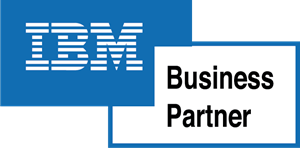

Desarrollo a medida
Software a medida e integración de sistemas de múltiple envergadura sobre diferentes plataformas tecnológicas. Conectamos tus aplicaciones para que la información fluya end-to-end.
Nuestras alianzas · partner de ecosistemas de primer nivel

Somos expertos en el desarrollo de software a medida y en la implementación de paquetes de primer nivel como SAP y Oracle JD Edwards. También nos especializamos en IA Empresarial, integración de aplicaciones, evaluaciones y auditorías.
Software a medida e integración de sistemas de múltiple envergadura sobre diferentes plataformas tecnológicas. Conectamos tus aplicaciones para que la información fluya end-to-end.
Implementación, evolución y soporte de SAP, incluido el camino hacia S/4HANA. Paquetes de primer nivel respaldados por más de 30 años de experiencia.
Implementación, upgrades y soporte de JD Edwards EnterpriseOne y World. Proyectos de misión crítica como partner del ecosistema Oracle/IBM.
Incorporamos la inteligencia artificial al negocio: agentes de IA, RPA y automatización inteligente de procesos. Llevamos la IA a producción, con casos reales como la conciliación de fondos de inversión.
Evaluaciones y auditorías para conocer las necesidades reales de tu empresa, generar una propuesta de valor y optimizar costes antes de invertir.
Desarrollo crítico para banca y finanzas y modernización de sistemas legacy (COBOL, AS/400, DB2), donde la fiabilidad y la continuidad del negocio son innegociables.
Conocemos el mundo SAP y sabemos cómo hacer que se integre, evolucione y escale: desde migraciones a SAP S/4HANA hasta desarrollos a medida. Aceleramos los flujos de trabajo, mejoramos la eficiencia operativa y maximizamos el retorno de la inversión.
Un aliado de confianza en Oracle JD Edwards. Implementamos, evolucionamos y damos soporte a EnterpriseOne y World con soluciones a medida que se adaptan a las necesidades reales de cada negocio, con más de una década acompañando operaciones críticas.
Integramos Business Intelligence, Inteligencia Artificial y automatización (RPA) en una misma estrategia para que tu organización decida mejor y opere con más eficiencia. Llevamos la IA a producción con casos reales.
Plataformas: Power Platform · OpenAI · Google Cloud · UiPath · SAP Joule
Diseñamos aplicaciones web y móviles modernas, integramos sistemas y gestionamos grandes volúmenes de datos. Nos integramos a tu metodología con foco en la usabilidad, el rendimiento y la escalabilidad.
Nos adaptamos a tu realidad: desde un proyecto llave en mano hasta sumar talento senior a tu equipo. Siempre con calidad asegurada y cercanía.
Proyectos llave en mano, del análisis a producción, con un plan claro y entregables medibles.
Mantenemos y hacemos evolucionar tus sistemas con niveles de servicio y mejora continua.
Una fábrica de software dedicada que escala tu capacidad de entrega con calidad asegurada.
Sumamos perfiles senior a tu equipo, integrados a tu cultura y a tu forma de trabajar.
Evaluamos procesos, tecnología y madurez para decidir con datos antes de invertir.
Misma franja horaria, cultura cercana y costes optimizados: colaboración en tiempo real desde España y Latinoamérica.
Empezamos por un assessment honesto. Nuestra experiencia de +30 años nos permite entender el negocio para generar una propuesta de valor y optimizar costes.
Combinamos desarrollo a medida con el dominio de software empresarial de primer nivel para integrar sistemas de múltiple envergadura.
Nuestra trayectoria internacional nos permite integrarnos con flexibilidad y eficiencia a equipos multiculturales, en la modalidad que mejor se adapte a cada proyecto.
Acompañamos a nuestros clientes en la adopción de la solución digital oportuna y adecuada para cada negocio, sector y cultura, estableciendo relaciones duraderas.
Desarrollamos proyectos en más de 16 países, con empresas y organismos gubernamentales. Entre nuestras referencias: una auditoría para Motta Internacional, Weatherford, Abertis/Autopistas del Oeste y Banco Itaú.
Desarrollo crítico, modernización de legacy y proyectos para la industria financiera, como Banco Itaú.
Proyectos para grupos de distribución y retail, como la auditoría a Motta Internacional.
Proyectos para compañías globales del sector, como Weatherford.
Soluciones para operadores de infraestructuras y concesiones, como Abertis/Autopistas del Oeste.
Proyectos con organismos gubernamentales en distintos países de nuestra trayectoria internacional.
Automatización inteligente de procesos, como la conciliación de fondos de inversión.
Proyectos de SAP, Oracle JD Edwards, IA Empresarial, desarrollo a medida e integración para líderes de banca, agro, gran consumo, energía y medios de pago. Filtra por servicio o busca por palabra clave.
Reto. El equipo de finanzas necesitaba agilizar la consolidación de sus distintos fondos comunes de inversión (FCI) para el cálculo de impuestos y su imputación en SAP. El procesamiento manual consumía varios días de trabajo de una persona, con alto coste operativo y elevado riesgo de errores.
Solución. TeGeVe desarrolló una aplicación sobre la plataforma de Microsoft con inteligencia artificial que lee e interpreta automáticamente los documentos PDF de los bancos, vuelca los datos en Excel estructurado por FCI y consolida los resultados. El sistema calcula saldos e impuestos, notifica por Outlook y alerta sobre cualquier incidencia.
Resultado. La solución reduce el procesamiento de cuatro días a cuestión de horas, minimiza los errores y ofrece resultados inmediatos. Simplifica la gestión de grandes volúmenes de información y es escalable a nuevos fondos y bancos.
Reto. La empresa planificaba su operación logística diaria de forma manual con hojas de Excel: procesaba pedidos, completaba datos faltantes y definía recorridos según la flota disponible. Era un proceso complejo y exigente, con alto riesgo de error y fuerte dependencia del conocimiento del programador logístico, que debía gestionar a mano múltiples restricciones (carga correcta de cisternas, estabilidad de los camiones, separación de combustibles y eficiencia de las rutas).
Solución. TeGeVe desarrolló una aplicación con IA que automatiza la planificación logística replicando la lógica del programador. La solución integra los pedidos de distintas fuentes, completa automáticamente los datos faltantes, optimiza la carga de las cisternas y resuelve el problema de ruteo de vehículos respetando todas las reglas del negocio, generando los recorridos diarios y la documentación de envío de forma automática.
Resultado. El equipo automatizó la planificación logística, redujo los tiempos del proceso y eliminó los errores manuales. La solución optimiza el uso de la flota, mejora la eficiencia de los recorridos y estandariza la operación, además de sentar una base sólida para escalar capacidades de IA más avanzadas. El cliente valoró el proyecto con la máxima puntuación (5/5).
Reto. Una multinacional productora de equipamiento agrícola necesitaba un ERP robusto, capaz de adaptar con rapidez sus procesos ante los cambios de coyuntura y lo suficientemente escalable para acompañar su crecimiento. El desafío incluía ajustar el sistema a la realidad local sin desviarse de los estándares regionales.
Solución. TeGeVe fue seleccionada en 2010 para apoyar la implementación de JD Edwards EnterpriseOne en Argentina, abarcando la migración de datos y la instalación, sobre un modelo definido a partir del diseño adoptado en Brasil. Desde 2012, el equipo brinda un acompañamiento continuo, adaptando funcionalidades ante nuevos negocios como los derivados de la adquisición de Precision Planting.
Resultado. El cliente gestiona de forma centralizada la producción, la venta y la exportación, junto con la administración integral de cobranzas, pagos y facturas, y dispone de información en tiempo real de múltiples sectores. La compañía ganó eficiencia y calidad en sus procesos de fabricación gracias a una solución escalable que evoluciona con el negocio.
Reto. Tras un assessment interno en el área de IT, Nutrien, el mayor proveedor de insumos y servicios para cultivos de la región, identificó la necesidad de revisar el modelo de seguridad de su ERP y formalizar los niveles de acceso de los usuarios en sus operaciones de Chile, Uruguay y Argentina.
Solución. TeGeVe llevó a cabo una evaluación integral del ERP Oracle JD Edwards E1 9.2: diagnosticó el estado actual (As Is) del modelo de seguridad, definió el modelo objetivo (To Be) y especificó las estrategias de adecuación, con documentación completa y recomendaciones para su implementación.
Resultado. La seguridad pasó a formar parte del enfoque estratégico de la compañía. Se optimizaron las protecciones del ERP, se formalizaron los procesos sensibles de gestión de usuarios y se estableció un plan de mantenimiento con objetivos medibles, reforzando las prácticas de seguridad mediante una colaboración conjunta.
Reto. Los equipos de soporte afrontaban errores de integración entre sistemas, sobre todo con los datos de empleados repartidos entre servidores propios y plataformas en la nube, lo que generaba inconsistencias en los estados de actualización. Un equipo dedicado debía revisar, clasificar y abrir tickets de error de forma manual varias veces al día.
Solución. TeGeVe desarrolló un monitor de errores de integración en SAP Fiori, dentro de la plataforma SAP BTP del cliente, que se conecta con HCM (OnPremise) y SuccessFactors a través de CPI para consolidar la información en un único punto y mostrarla en línea.
Resultado. El personal administrativo accede a la información en tiempo real y el equipo antes dedicado a la revisión manual quedó liberado para otras tareas. La parametrización de tendencias reduce el volumen de tickets y aligera la carga de los equipos de soporte. El trabajo conjunto con el cliente permitió incorporar funcionalidades adicionales no previstas inicialmente, como una pantalla de errores frecuentes con navegación hacia sus soluciones.
Reto. Una de las principales empresas agroindustriales de Argentina necesitaba soporte funcional continuo sobre su sistema SAP, abarcando la resolución de incidencias, la atención de consultas de los usuarios y la capacitación permanente de los nuevos integrantes del equipo.
Solución. TeGeVe diseñó un modelo de soporte basado en la cercanía, la colaboración y la eficiencia. El equipo puso en marcha una mesa de ayuda funcional de niveles 1 y 2, con herramientas flexibles de gestión de tickets y una base de conocimiento compartida que permitió escalar las soluciones de forma ágil.
Resultado. El servicio remoto redujo los costes operativos sin comprometer la calidad y evitó los impactos derivados de la rotación de personal. La asignación flexible de recursos permitió ajustar los costes a las necesidades del negocio, con una valoración del cliente de 5 sobre 5.
Reto. Como líder mundial en productos de higiene, Kimberly-Clark necesitaba detectar tendencias de consumo y anticipar distintos escenarios para definir estrategias seguras. Para ello requería acceso a información actualizada en tiempo real desde sus filiales, con la flexibilidad y escalabilidad necesarias para sostener el crecimiento del análisis.
Solución. TeGeVe acompañó la evolución de la plataforma analítica del cliente, migrando primero de SAP BW a SAP HANA y Tableau, y posteriormente adoptando Snowflake (Data Cloud) y Power BI en la nube. El equipo habilitó así un entorno escalable que consolida información de las distintas filiales y la pone a disposición de forma actualizada.
Resultado. El seguimiento estadístico de indicadores propios y de mercado a nivel local, regional y global permite optimizar las acciones de producción, logística y exhibición en góndola. Además, la generación de informes facilita redefinir objetivos estratégicos y tomar decisiones fundamentadas a partir de múltiples variables.
Reto. El banco necesitaba actualizar su aplicativo de cálculo del rating, la calificación crediticia para personas físicas y jurídicas, junto con la interfaz de carga de información asociada.
Solución. TeGeVe realizó la parametrización del cálculo del rating, centralizó la funcionalidad en una única aplicación y migró la herramienta a un portal web diseñado con foco en la usabilidad.
Resultado. El nuevo desarrollo aporta mayor trazabilidad del funcionamiento y un soporte evolutivo de calidad que facilita la adaptación a futuros requerimientos. Al unificar la solución en una sola aplicación, se redujeron los costes de mantenimiento y mejoró la experiencia de usuario.
Reto. Una aseguradora de referencia necesitaba adaptar su plataforma de gestión a los cambios constantes de la operativa del negocio, sin renunciar a calidad, estabilidad ni a tiempos de respuesta ágiles.
Solución. TeGeVe puso en marcha una Software Factory con un equipo de analistas, desarrolladores y testers que da soporte a todo el ciclo de vida de las herramientas, actualizando la plataforma de forma continua.
Resultado. El cliente logró adaptar su sistema a la evolución de la operativa con calidad y rapidez, lo que le permite sostener su posición como uno de los líderes más relevantes de su industria.
Reto. First Data, proveedor global de soluciones de pagos, necesitaba adaptar sus procesos para habilitar la operatividad de tarjetas con chip (EMV). El objetivo era actualizar su tecnología para dar soporte simultáneo a tarjetas con chip y de banda magnética.
Solución. TeGeVe ofreció servicios de integración, soporte, implementación y testing sobre el entorno de pagos del cliente. El equipo adaptó el modelo de datos para diferenciar las tarjetas con chip de las de banda magnética y trabajó sobre los sistemas de autorización y pagos internacionales.
Resultado. Se mejoró la seguridad de las transacciones y se redujo el fraude, habilitando la operatividad tanto con banda magnética como con chip. Además, se logró la certificación de tarjetas IC y mejoras en los sistemas de autorización y de pagos internacionales.
Reto. First Data, entidad financiera licenciataria de MasterCard, necesitaba incorporar a sus sistemas nuevas prestaciones que acompañaran sus estrategias de marketing y elevaran la calidad de servicios como MasterAssist, los préstamos en línea y los resúmenes de gastos con información más detallada.
Solución. TeGeVe integró los sistemas legacy con nuevas funcionalidades y modificaciones para ampliar y mejorar las plataformas de MasterAssist, préstamos, el programa de fidelización, las campañas y las cuentas corrientes, sobre un entorno mainframe.
Resultado. La entidad amplió y mejoró su oferta de servicios, reforzando su posicionamiento de mercado. Se incorporaron datos al servicio de asistencia médica, se habilitó una nueva interfaz web en la plataforma de Call Center y se unificó la presentación de bonificaciones en los resúmenes de cuenta.
Reto. Motta Internacional operaba con múltiples sistemas ERP antiguos e independientes que ya no respondían a las necesidades cambiantes del grupo. La compañía necesitaba unificar su infraestructura tecnológica y tomar una decisión de inversión fundamentada sobre qué plataforma adoptar.
Solución. El equipo de TeGeVe llevó a cabo un Business Value Assessment: mapeó los procesos y el ecosistema tecnológico para construir un modelo As Is, diseñó un modelo multidimensional de evaluación a medida y, sobre esa base, realizó un análisis comparativo de dos opciones de ERP world-class.
Resultado. Motta Internacional obtuvo información objetiva y fundada para seleccionar el ERP más conveniente para el grupo, junto con un roadmap de acciones concretas a ejecutar antes de la implementación. La decisión de inversión dejó de basarse en percepciones para apoyarse en evidencia estructurada.
No hay casos que coincidan con tu búsqueda. Prueba con otra palabra clave o quita los filtros.
Hemos acompañado a líderes de banca, telecomunicaciones, gran consumo, energía e industria en Europa y América.
Relaciones de confianza que se sostienen durante años, en banca, energía e infraestructuras.
TGV nos ha permitido convertirnos en una alternativa a medida, ágil y viable, sin la cual no hubiéramos podido alcanzar nuestro objetivo. El impacto positivo en nuestro departamento ha sido muy sólido, gracias a la voluntad y la flexibilidad de TGV para discutir, proponer y acordar una alternativa viable para nuestra situación.
Con la ayuda de TGV como socio tecnológico genuino, logramos desarrollar un sistema de control de permanencia que gestiona más de 400 dispositivos móviles distribuidos en todo el país.
Han demostrado ser un proveedor confiable, y los servicios que nos brindan nos ayudan a cumplir con nuestros proyectos. Sin dudas, podemos recomendarlos como una empresa a la cual contratar.
TGV es nuestro proveedor desde 2011. No dudamos en recomendarlos como una empresa a la cual contratar.
Son los cimientos sobre los que se fundó TeGeVe: una consultora tecnológica con más de 30 años transformando los proyectos más desafiantes en soluciones innovadoras.
Años de trayectoria
Países con proyectos
Nivel de madurez acreditado
«Ser una compañía líder en tecnología a nivel global, estableciendo alianzas sólidas con nuestros clientes para acompañarlos en sus procesos de transformación digital y de negocios.»
Nace TGV. Osvaldo Tessio, Ernesto Galindez y Marta Vicena lo fundan en Argentina: un espacio donde las personas apasionadas por la excelencia pueden desarrollarse.
Damos nuestro primer paso internacional con Phillip Morris México. El mundo entra en los planes de la compañía.
SAP se convierte en nuestro primer Service Partner en el ámbito comercial.
Iniciamos la adhesión al estándar de calidad de la industria: CMMI.
Inauguramos nuestra primera oficina internacional, en Monterrey, bajo el nombre de Soinf.
Abrimos oficina en Florida como TGVAmericas, dentro de la expansión regional del Grupo TGV.
Llegamos a Málaga y abrimos oficinas como TeGeVe: comienza el capítulo español del Grupo TGV.
Cumplimos 30 años y superamos la 6.ª evaluación del modelo de calidad CMMI.
Avanzamos con Horizonte: empoderamiento del equipo directivo, multiculturalidad y evolución tecnológica.
Obtenemos el nivel de madurez 3 en el CMMI DEV Benchmark Appraisal.
Paso firme en el mercado internacional: cientos de proyectos exitosos y decenas de clientes satisfechos.
Tus objetivos guían cada decisión: entendemos el negocio antes que la tecnología.
Revisamos, medimos y refinamos. Cada proyecto nos deja mejores que el anterior.
Preguntamos y escuchamos de verdad para resolver el problema real, no el aparente.
Equipos diversos en tres continentes que suman miradas y enriquecen cada solución.
Personas con autonomía y criterio para decidir y llevar las ideas a producción.
Relaciones duraderas dentro y fuera: cuidamos al equipo y a cada cliente.
Porque transformamos los proyectos tecnológicos más desafiantes en soluciones innovadoras. Esto es lo que nos define.
Un equipo multidisciplinar y senior con el que estableces relaciones duraderas. El conocimiento de tu proyecto se queda en casa.
Nos integramos a equipos multiculturales con flexibilidad y eficiencia, optimizando costes con un modelo de entrega ágil.
Experiencia profunda en desarrollo a medida, SAP, JD Edwards, IA y modernización de legacy. Hemos visto —y resuelto— casi todo.
Orientación al cliente y escucha activa: trato directo con quien diseña y ejecuta. Decisiones rápidas y foco en el resultado.
Automatización inteligente con casos reales, como la conciliación de Fondos Comunes de Inversión. Nada de pilotos que no escalan.
Entendemos las necesidades reales del negocio para generar una propuesta de valor y optimizar costes antes de invertir.
Una cultura de personas, calidad certificada y compromiso con el sector tecnológico.
Certificaciones y membresías
Finalistas de los Premios Sadosky, reconocimiento Customer Focus en el Oracle JD Edwards Summit y distinción como uno de los mejores empleadores del sector tecnológico durante años consecutivos.
¿Tienes una pregunta que no está aquí? Pregúntale a abajo a la derecha.
Cuéntanos tu reto y te propondremos un enfoque con un alcance claro, centrado en el valor de negocio y la optimización de costes.